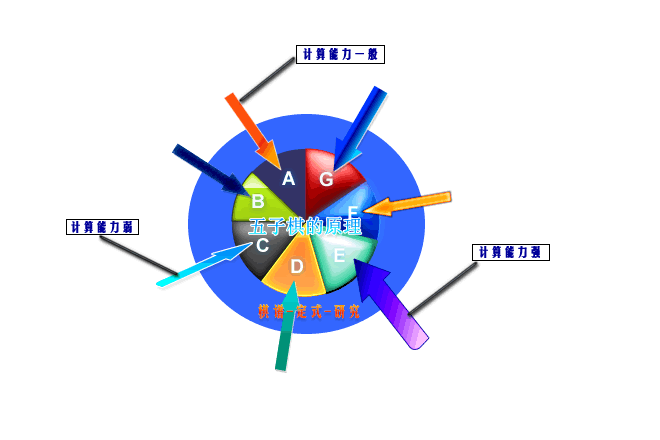

管中窥豹（连珠原理初涉）
#1 管中窥豹（连珠原理初涉）作者：游戏人间 发表时间：2008-11-30 3:15:06
管中窥豹（连珠原理初涉）
下棋也下了8.9年了，从一开始的懵懂无知到现在取得了一些不错的成绩。水平在不断的进步，对棋的理解也在不断的提高。但是始终无法发现棋的原理是什么。直到最近几个月一直从事现实教学和网络教学，结合自己对棋的理解才忽然发现了到底五子棋的原理是什么。学习连珠到底是在学习什么，学习的方向在哪里。粗略写写，姑且当做一家之言。
那么棋的原理指的是什么呢？比较通俗的说法是棋理-对棋的理解。具体表现在对局面的解读能力，对局面的掌握能力，对局面的创造能力。只有对棋的原理理解越深厚的才能越自如的使用以上几种能力。这才是优秀棋手比普通棋手强大的本质所在。
单纯用文字表达似乎还不能表达的很清楚，下面简单做了个示意图：

这里呢想用一句成语来表达：管中窥豹 #2 Re:管中窥豹（连珠原理初涉）作者：游戏人间 发表时间：2008-11-30 3:21:56 #3 Re:管中窥豹（连珠原理初涉）作者：暮雨迟 发表时间：2008-11-30 5:37:40 #4 Re:管中窥豹（连珠原理初涉）作者：掌棋宣传员 发表时间：2008-11-30 6:46:56 #5 Re:管中窥豹（连珠原理初涉）作者：快乐天羽 发表时间：2008-11-30 9:20:25 2楼的，你那不是沙发，最多是个板凳。 大鱼，给自己加奖励有什么用吗？？ #6 Re:Re:管中窥豹（连珠原理初涉）作者：有志青年 发表时间：2008-11-30 9:42:14 #7 Re:管中窥豹（连珠原理初涉）作者：非鸟 发表时间：2008-11-30 11:45:45 感觉这个有点像体育运动游戏中,每个运动员能力值都是个5角或6角形外框, 比如体能,意识,防守,进攻等等,然后根据大致实际能力会形成或长或短的实际线条, 综合能力越强就越接近外框的形状,学棋理应该也是一样,不管什么水平段的棋手 应该都是有不足之处的,融会贯通取长补短应该是进步之道. #8 Re:管中窥豹（连珠原理初涉）作者：狮子何必吼 发表时间：2008-11-30 18:50:31 应该算是一个阐述棋理的不错的引言！～～高手对棋的理解是在各种经验中积累起来的，对棋的理解通常是＂自觉＂的而不是＂自由＂的，也就是说，现在五子棋还缺乏一套自己系统的理论来指导实践，虽然通过努力能挖掘的棋理不会到达整个圆的完美境地，但至少可以演化出很多有价值的东西。围棋就有很多关于棋理的东西呀，五子棋肯定也有的。 大鱼哥哥加油 #9 Re:管中窥豹（连珠原理初涉）作者：游戏人间 发表时间：2008-11-30 20:00:43 #10 Re:管中窥豹（连珠原理初涉）作者：水墨 发表时间：2008-11-30 22:23:46 #11 Re:管中窥豹（连珠原理初涉）作者：虎哥 发表时间：2008-11-30 23:32:19 #12 Re:管中窥豹（连珠原理初涉）作者：纳米 发表时间：2008-12-1 15:03:33 竟然是新贴，好旺的人气 #13 Re:管中窥豹（连珠原理初涉）作者：许相公 发表时间：2008-12-5 14:21:26 #14 Re:管中窥豹（连珠原理初涉）作者：温柔侠客 发表时间：2009-2-15 11:52:55 #15 Re:管中窥豹（连珠原理初涉）作者：无解 发表时间：2009-2-15 13:53:41 #16 Re:管中窥豹（连珠原理初涉）作者：刀魂 发表时间：2009-3-9 19:45:32 #17 Re:管中窥豹（连珠原理初涉）作者：彩虹 发表时间：2010-1-24 14:43:43 #18 Re:管中窥豹（连珠原理初涉）作者：黄药师 发表时间：2010-1-24 16:42:19 #19 Re:管中窥豹（连珠原理初涉）作者：雨碎红尘 发表时间：2010-5-12 15:54:00 #20 Re:管中窥豹（连珠原理初涉）作者：锐 发表时间：2010-5-15 16:08:21 #21 Re:Re:管中窥豹（连珠原理初涉）作者：淡红的秋樱 发表时间：2010-5-15 17:33:14
上图中心部位的7色圆姑且表达为五子棋的原理。外层蓝色的圈代表定式-研究-棋谱等等。各种颜色的箭头就当作用来透过定式直接看到原理使用的管子好了，管子的粗细是由计算能力的强弱来决定的，透过粗的管子所看到的原理必然比透过细的管子所看到的要更多更广阔。而箭头部分用的三角形来表现，其实也可以用圆柱形或者其他形状表示，意义是代表各种不同的行棋规则。可以看到各种规则的限制只是造成了箭头形状的不同。那么规则的讨论分歧只是每个人审美的角度不同而已。有人偏好三角形有人偏好圆形有人偏好不规则图形。但通过不同形状的管子看到的原理永远是同一个原理。从上图可以看到透过不同方向的定式（蓝圈）角度可以看到的连珠原理都是不尽相同的。而定式永远是原理的外在表达方式。中心的圆简单用颜色来分成几个部分，来表示棋的不同原理。古人尚且知道从不同角度看待一个事物得出的结论往往是片面的。那么透过不同的定式我们能接触学习到的连珠原理肯定也是不同的。
每个人所看到学到的这些原理往往取决于几个方面：
第一.
计算能力的强弱。在上图中用箭头的粗细来表达了，毫无疑问箭头粗的所看到的原理肯定比箭头细的所看到的更多一些，也更广一些。
第二.
定式研究的深入与否。通过上图可以看到，研究越深厚，定式了解越多的肯定更能够深入原理，那么所学习到的原理部分肯定也是更多的。
第三.
图中心的圆是分成多种颜色的，这些代表的都是不同方面的棋的原理。那么接触到的
引用：
只要是版主就可以奖励，在你版块里发帖或者回复质量高的，你就可以奖励了哟。
原文由 游戏人间 发表于 2008-11-30 3:21:56 :
晕。。。忽然发现原来可以自己随便给自己奖励啊哈哈 


 ,还两次...
,还两次... 棋的愿意应该是和数学离不开的！5子连珠应该符合某种函数的运算规律~体现到棋盘上就变成了大家喜爱的连珠棋！能使5子连成了一线说明符合了函数的映射条件！所以所有的开棋所有的变换都应该在一个区域里面！只要我们找到运算规律~在不远的将来我们能解决这个原理的问题的！！！
棋的愿意应该是和数学离不开的！5子连珠应该符合某种函数的运算规律~体现到棋盘上就变成了大家喜爱的连珠棋！能使5子连成了一线说明符合了函数的映射条件！所以所有的开棋所有的变换都应该在一个区域里面！只要我们找到运算规律~在不远的将来我们能解决这个原理的问题的！！！ 学习一下学习学习~
学习一下学习学习~引用：
其实数学很广大的。只是你接触的那个面你不适应吧。
原文由 锐 发表于 2010-5-15 16:08:21 :
我数学很差，难道想学好没啥希望了吗？